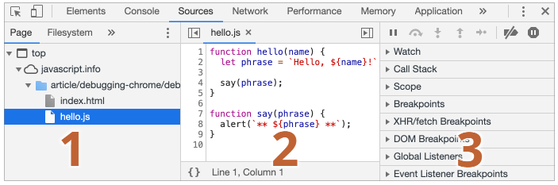
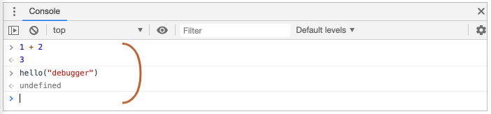
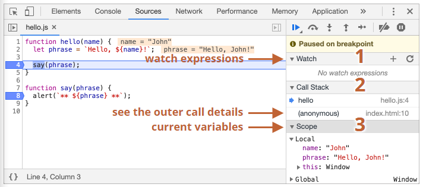
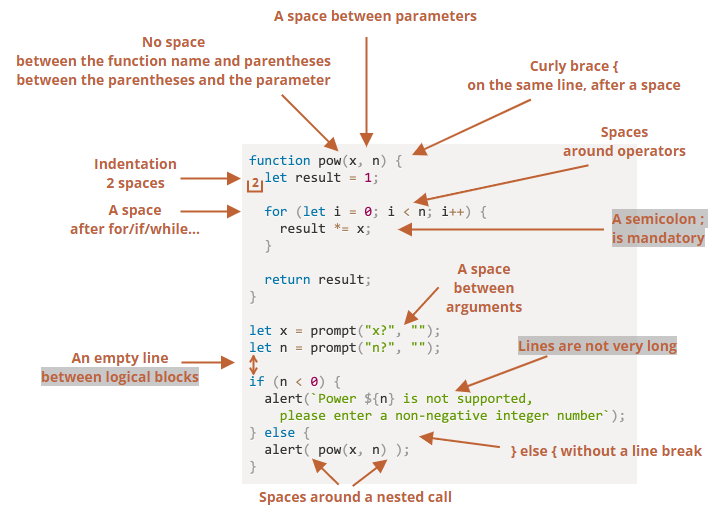
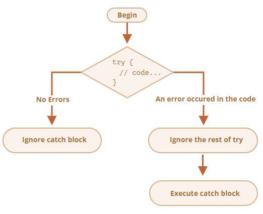

3.1 Debugging in the browser
3.2 Coding Style
10.1 Error handling, "try...catch"
3.1 Debugging in the browser
The article introduces how to use the debugging tools in Chrome Developer Tools to find and fix errors in JavaScript code. The Sources panel:  How to open the panel, navigate the files, and set breakpoints on specific lines of code. Breakpoints are points where the debugger pauses the execution and allows to inspect variables, run commands, and so on. The Console:  How to open the console, type commands, and see the results. The console can also show errors and warnings that occur during the script execution. Watch and other panels: How to use the watch expressions to monitor specific variables or expressions over time. How to use other panels such as Scope, Call Stack, and Breakpoints to get more information about the current state of the script. Debugger command:  How to use the debugger statement in the code to pause the execution at any point. This can be useful when setting a breakpoint is not convenient or possible. Pause and resume: How to use the buttons and keyboard shortcuts to pause and resume the script execution, and step through the code line by line or jump between function calls. Blackbox scripts: How to exclude third-party scripts from debugging, such as library or framework code, by blackboxing them. This can help reduce noise and focus on the relevant code.
3.2 Coding Style
The article discusses the importance of having a good code style that makes the code clean and easy to read. Use curly braces in “Egyptian” style, with a space before the opening brace and on the same line as the corresponding keyword. Use one line for simple if statements without braces, but use a code block for complex ones. Split long lines into multiple lines for readability, with a maximum line length of 80 or 120 characters. Use horizontal indents of 2 or 4 spaces or tabs, and vertical indents of empty lines to separate logical blocks of code. The article also explains the reasons for these rules and how they can improve the readability and maintainability of the code.

10.1 Error handling, "try...catch"
The article explains how to use the try…catch statement in JavaScript to handle errors or exceptions that may occur while executing a block of code. The statement has two main blocks: try and catch. Optionally, it can also have a finally block. The code in the try block is executed first, and if it throws an exception, the code in the catch block is executed. The catch block can access the exception object that contains details about the error. The code in the finally block is executed regardless of whether an error occurs or not. The article also provides some examples of using the try…catch statement with different types of errors, such as runtime errors, parse-time errors, and asynchronous errors. It also shows how to nest multiple try…catch statements and how to use destructuring patterns to assign multiple identifiers from the exception object.

let num = +prompt("Enter a positive integer number?", 35)
let diff, result;
function fib(n) {
if (n < 0 || Math.trunc(n) != n) {
throw new Error("Must not be negative, and also an integer.");
}
return n <= 1 ? n : fib(n - 1) + fib(n - 2);
}
let start = Date.now();
try {
result = fib(num);
} catch (err) {
result = 0;
} finally {
diff = Date.now() - start;
}
alert(result || "error occurred");
alert( `execution took ${diff}ms` );